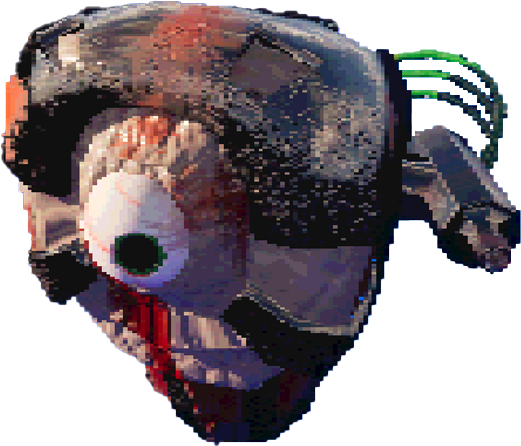

I made Flesh Gun: Adrenaline Junkie in my Rapid Games Prototyping Unit, I made the original prototype in just over three weeks.
_____ _ _____ ____ _ _ ____ _ _ _ _
| ___| | | ____/ ___|| | | | / ___| | | | \ | | _
| |_ | | | _| \___ \| |_| | | | _| | | | \| | (_)
| _| | |___| |___ ___) | _ | | |_| | |_| | |\ | _
|_| |_____|_____|____/|_| |_| \____|\___/|_| \_| (_)
_ ____ ____ _____ _ _ _ _ ___ _ _ _____ _ _ _ _ _ _ _____ _____
/ \ | _ \| _ \| ____| \ | | / \ | | |_ _| \ | | ____| | | | | | \ | | |/ |_ _| ____|
/ _ \ | | | | |_) | _| | \| | / _ \ | | | || \| | _| _ | | | | | \| | ' / | || _|
/ ___ \| |_| | _ <| |___| |\ |/ ___ \| |___ | || |\ | |___ | |_| | |_| | |\ | . \ | || |___
/_/ \_|____/|_| \_|_____|_| \_/_/ \_|_____|___|_| \_|_____| \___/ \___/|_| \_|_|\_|___|_____|
-
____ _ | __ ) __ _ ___| | __ | _ \ / _` |/ __| |/ / | |_) | (_| | (__| < |____/ \__,_|\___|_|\_\ -
_ _ | | | | ___ _ __ ___ ___ | |_| |/ _ \| '_ ` _ \ / _ \ | _ | (_) | | | | | | __/ |_| |_|\___/|_| |_| |_|\___| -
_ _ _ / \ | |__ ___ _ _| |_ _ __ ___ ___ / _ \ | '_ \ / _ \| | | | __| | '_ ` _ \ / _ \ / ___ \| |_) | (_) | |_| | |_ | | | | | | __/ /_/ \_|_.__/ \___/ \__,_|\__| |_| |_| |_|\___| -
____ _ _ / ___|___ _ __ | |_ __ _ ___| |_ | | / _ \| '_ \| __/ _` |/ __| __| | |__| (_) | | | | || (_| | (__| |_ \____\___/|_| |_|\__\__,_|\___|\__|
Section Summary:
Flesh Gun was the second game made in my Rapid Games Prototyping Unit the prompt for this game was "Wave after Wave". I have continued to update the game in my spare time.
I was inspired primarily by Ultrakill and Cruelty Squad to make this game what it ended up being.
The original idea comes from a game I made in secondary school, using the skills I developed at University I decided to remake it to see how my skills have changed.
Play the game here:
_ _ _ _ _
| | | | _____ __ (_| |_ __ _____ _ __| | _____ _
| |_| |/ _ \ \ /\ / / | | __| \ \ /\ / / _ \| '__| |/ / __| (_)
| _ | (_) \ V V / | | |_ \ V V | (_) | | | <\__ \ _
|_| |_|\___/ \_/\_/ |_|\__| \_/\_/ \___/|_| |_|\_|___/ (_)
The core mechanic of the game is that as the players health drops, time moves slower and the fire rate of the gun increases thereby allowing them to deal more damage, akin to how strength can increase with the presence of adrenaline.
This works by getting the players health value, divides it by 100 then sets the time dialation node to that value, the fire rate is increased by set values that I decided on during play testing in order to make the game feel as good as possible. Each value is picked by a truncated health value in a switch statement.
You can see the blueprint here:
_____ _
| ____| _ __ ___ _ __ ___ (_) ___ ___ _
| _| | '_ \ / _ | '_ ` _ \| |/ _ / __| (_)
| |___ | | | | __| | | | | | | __\__ \ _
|_____||_| |_|\___|_| |_| |_|_|\___|___/ (_)
Contrasting the players' "Flesh Gun", the enemies are a fusion of meat and machine this contrasts the player who is a fully organic being. Same with the player, all of the enemies were modelled in Maya and textured in Substance Painter.
The Leaper
This is the weakest enemy and the first the player will encounter. It is called the Leaper and it moves towards the player and once it is within a certain radius it will jump towards the player and deal damage upon contact. Upon its death it will drop a heart which the player can eat to regain health
The Dasher
This is the Dasher, it's stronger and moves much faster. It seeks out the player like the Leaper but instead of jumping, it dashes forward and slams into the player dealing damage. Instead of dropping a heart, it drops a syringe which activates the adrenaline ability.
The Shooter

The Shooter was meant to fly around map but instead it hovers slightly above the ground, unsuprisingly it shoots projectile teeth towards the player that deal large amounts of damage.
The Player
The titular Flesh Gun was the first thing made for this project, when I decided on recreating Adrenaline I had wanted to make the gun a literal extention of the player, this eventually led me to creating the Flesh Gun.
This is actually a second revision as I decided it was too low-poly and I wanted a higher fidelity player model.